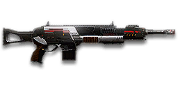

← Back to the T1B Cycler comparison
Sage Guide · Terran Republic · Combat Medic
The burst-fire version of the TR's starter rifle. Same bullets, same fire rate — but every trigger pull is a tight 3-round burst, so your shots land where you meant them.
Read this first — this gun is NOT a starter. The T1B Cycler costs 650 certs (or 499 Daybreak Cash) and is unlocked through purchase. Your free starter rifle is the T1 Cycler — the T1B is the burst-fire version of it: same damage, same fire rate, same kill time, but a tighter cone and a much gentler first shot.
The one-line verdict: the most accurate rifle a TR Medic can buy early — a 0.06° first-shot cone, sideways walk of just 0.17°, and a first shot that kicks less, not more. Its price is honest: there is no full-auto mode, so trigger discipline is mandatory. Fight between 10 and 40 metres, fire in two-burst holds, and it will carry you.

The T1B Cycler · Terran Republic · 42-round magazine · 650 certs
Every section below folds shut — tap a heading to open it. Section 01 starts open, because it's the lesson that saves you the most deaths.
Picture the scene, because you've probably lived it: you're sprinting across a courtyard, an enemy appears, and you do everything at once — hold the trigger down while you're still running, then press aim-down-sights (ADS) a split-second later, finger still down. The sight picture snaps in, it looks precise… and your bullets spray everywhere except the man in your crosshair. He kills you. It feels like the game cheated. It didn't — here's what actually happened.
Sprinting is the least accurate state in the game: your cone starts at 7.0° — fully bloomed, the widest it can ever be — and every hipfire shot widens it further (+0.10° per shot). Pressing ADS mid-hold changes the picture, not the cone.
You started firing from a sprint, from the hip. Sprinting is the least accurate state in the game: your cone of fire starts at 7.0° — fully bloomed, the widest it can ever be. Every shot you fire from the hip widens it further still (+0.10° per shot).
Then you pressed ADS mid-hold — and nothing reset. Aiming down sights does not shrink a cone of fire that is already bloomed. The scope only gives you a precise picture; the bullets keep flying out of the wide cone you built while running and hipfiring. That's the whole mystery: accurate-looking aim, wildly inaccurate gun.
Two timers stack the deck further: your gun needs about 0.3 s to settle after a sprint, and raising the sight itself takes ~0.15 s. Trigger held through all of it means your first half-second of fire is pure confetti.
1 · Feet. Let go of sprint (and the trigger, if you're already holding it). Stop, or drop into a strafe — anything but a full sprint.
2 · Sight. Press ADS and let the sight come up. This takes a heartbeat — that's fine, your Nano-Regen Device (F) is already topping your health back up.
3 · Trigger. Now fire. Starting from the aimed cone of 0.06°, your first shots land where the dot points, and you control the bloom from zero instead of inheriting a maxed-out cone.
Stop → aim → fire. If you take one habit from this entire page, take this one. You'll practise exactly this rhythm in the simulator in section 04.
Three beats, always in this order. Stop first so the cone can shrink, aim second so the sight is up before any bullet leaves, fire third from a cone that starts at 0.06° instead of 7.0°. The whole sequence costs about half a second — your Nano-Regen Device buys it.
Every enemy infantry has 1,000 health (500 shield + 500 health). Your bullet does 143 damage up close, fading to 112 at long range. Headshots count double, leg shots count less (×0.9). There are three bands to memorise — full damage to 10 m, a steady slide to 80 m, then minimum:
| Range | Damage | Head | Chest | Legs | Chest vs shielded Heavy |
|---|---|---|---|---|---|
| Close · 0–10 m | 143 | 4 | 7 | 8 | 11 |
| Mid · 10–80 m | 143→112 | 4 | 8 | 9 | 12 |
| Far · 80 m+ | 112 | 5 | 9 | 10 | 13 |
Perfect-accuracy times to kill: 4 headshots ≈ 0.24 s up close and at mid range (5 headshots ≈ 0.32 s past 80 m); 7 chest shots ≈ 0.48 s up close, 8 ≈ 0.56 s at mid range, 9 ≈ 0.64 s far out. In real fights you'll land maybe half your rounds — still, this is why the head matters so much on this gun: four head hits end it at any distance inside 80 m.
Full power to 10 m, then a steady slide to minimum at 80 m. The gold line shows High Velocity Ammunition, which stretches minimum damage out to 100 m.
One gun, four fighting styles. The right technique changes with distance — use the range finder below to see what your bullets do at any range, then learn the four bands underneath it.
How to fight hereAim down sights at the upper chest and neck. Fire in two-burst holds of 6 — your recoil climbs into the head for free damage.
Aim: centre of the chest, from the hip. Keep moving.
Scoping in costs you time and halves your speed — at arm's length that gets you killed. Your standing hipfire cone is 2.5°, and inside 10 m the ring is only 0.44 m wide. Strafe side to side (A/D) while firing so you're hard to track, and let your Nano-Regen Device top you back up after the trade.
Aim: neck / upper chest. Holds of 6 rounds (two bursts).
This is where the gun earns its keep: full 143 damage, a 0.06° starting cone, and recoil that climbs straight up. Plant your feet during each burst — you drop to half speed while aiming, so strafe between bursts, not during them. Start your crosshair at the neck — the natural upward climb walks your shots into the head, and 4 head hits end the fight in about a quarter of a second.
Aim: chest. Bursts of 3–6 rounds, pause between them.
Damage is sliding toward 112 and your cone of fire blooms if you hold the trigger. Fire a burst, release for a split second to let accuracy reset, fire again. The recoil climbs straight up (0°), so pull your mouse gently straight down. Crouch or stand still when you can — both tighten your shots.
Aim: chest. Single bursts of 3 at exposed targets only.
At 125 damage falling to 112 you need 8–9 chest hits — a long, loud advertisement of your position. Take these shots at stationary or fleeing targets, medics reviving, and engineers on turrets. Otherwise, your better play is to close the distance behind cover. Knowing when not to shoot is a skill too.
Your accuracy is decided by two things before skill even enters it: what your body is doing (your stance sets the starting cone of fire) and what your finger is doing (holding the trigger grows that cone with every shot). The T1B keeps two fire modes — 3-round burst and semi-auto (press B to switch) — but the burst IS the gun: semi-auto exists for long-range plinking, and it takes away the burst's gentle first shot.
| Stance | Starting cone | What it means for you |
|---|---|---|
| Sprinting | 7.0° | Maxed out — the widest the cone can be. This is the section 01 disaster: never start firing from a sprint. |
| Hipfire, moving | 3.0° | Walking or strafing from the hip. Fine inside ~10 m, leaks rounds past the target beyond it. |
| Hipfire, standing | 2.5° | Your point-blank default. The 0.44 m ring at 10 m in section 05 is this stance drawn out. |
| Hipfire, crouched | 2.0° | The tightest hipfire you have (2.5° if you crouch-walk). Crouch when holding a doorway from the hip. |
| Aimed (ADS), feet planted | 0.06° | Standing or crouched makes no difference here — about forty times tighter than hipfire. This is why section 01's order matters. |
| Aimed (ADS), strafing | 0.15° | The moving floor — this is the cone you start strafing from, and it is the number to remember, not "still + bloom". Two and a half times wider than planted, and you move at half speed (0.5×). Strafe between bursts to stay hard to hit; plant your feet during each burst. |
| Mode | How your finger does it | Use it at |
|---|---|---|
| The mag dump | Hold the trigger and don't let go | Point blank only, or suppressing a doorway. The gun keeps firing 3-round bursts at a steady 750 RPM — bloom maxes out fast, past ~8 rounds you're spraying, not aiming. |
| Two bursts — the default | Hold for 6 rounds (two trigger pulls), release ~0.15 s, hold again. 5 rounds is the ideal, 6–8 is fine while you're learning | Almost everything, 10–50 m. Each release resets the cone, so every hold starts at 0.06°. |
| One burst — tap-fire | A single trigger pull — 3 rounds — with a real pause between | 50 m and out, at exposed or stationary targets. Slow, but every round goes where the dot is. |
| Semi-auto | Press B to switch fire modes — one round per click, as fast as you can click | 50 m and out, when you want the game to enforce the pause for you. Warning: in semi-auto the first-shot kick flips — you lose the burst mode's gentle 0.75× first shot, so every click kicks harder. Burst mode is the accurate one. |
One more thing worth knowing: one trigger pull is a 3-round burst — shots 80 ms apart inside the burst, 80 ms between bursts — so a held trigger is a steady 750 RPM stream. The cone still grows 0.05° with every shot, so there are no free shots with no cone growth on this gun.
A target 30 m away, aiming down sights. Press and hold FIRE (mouse, touch, or hold Space with the button focused) and watch the holes walk wider the longer you hold — that's firing from an ever-growing cone. Release, let the cone reset, fire again. Aim for bursts of 5; 6–8 is tolerable while you're new. This practice window is shared by the whole Sage series: it's driven by a weapon profile plugged into the window — here the T1B Cycler's (750 RPM, 0.06° starting cone, 0.05° bloom per shot, target at 30 m) — and the spread is drawn at true scale from those numbers.
Cone of fire — fills as you hold, empties when you release.
Your bursts will be graded here — green at 5 rounds, tolerable up to 8.
Some things are easier to show than to say. Here's what your bullets actually do: how wide hipfire spreads at 10 metres, what a good burst rhythm looks like, and what the 2x sight really changes. The hands-on version — holding the trigger yourself — is the practice window in section 04.
A full-size target 10 m away — an arm's-length room fight. The rings show where hipfire rounds land around your aim point (the chest). Sizes are drawn to scale from the gun's real cone-of-fire numbers.
Read it this way: standing still, the 0.44 m ring is about the width of the chest — most rounds hit a target this size, which is why hipfire works point-blank. But move and it grows to 0.52 m — so the edge rounds start leaking past him, and the rings only grow with distance while the man doesn't. Past ~10 m that's rounds missing entirely: the exact moment to switch to aiming down sights, where the spread shrinks to a dot. (Ring sizes use the real geometry: spread diameter = 2 × distance × tan(cone ÷ 2).)
Every shot widens your cone of fire ("bloom"). Releasing the trigger for a heartbeat resets it. Same 18 rounds, two very different outcomes:
The target pattern is bursts of about 5 rounds — that's the ideal. Bursts of 6–8 are fine while you're new (call it newbie tolerance). Past that, the bloom (0.05° per shot aimed, 0.10° from the hip) keeps growing with every shot — the cone grows from shot 1, there are no free shots with no cone growth — so the extra bullets mostly decorate the wall behind your enemy instead of hitting him. On this gun one trigger pull is a 3-round burst, so a good hold is two pulls — 6 rounds. Short bursts also leave you rounds for the second enemy — remember, the magazine is 42, but at 750 RPM a held trigger empties it in about 3.4 seconds.
No zoom. The target at 35 m is small but the view is wide open — you see the crate, the tower, and the next enemy coming. Fast to aim, nothing blocks your edges. Best inside ~40 m.
Same target, same 35 m — but he looks twice as tall, so placing shots on his chest and head gets much easier. The price: your view narrows to the round window, the crate and tower are gone, and close targets feel fast and huge. Best at 25–50 m.
That's the whole 30-cert decision from section 06 in one picture: 1x for awareness, 2x for precision. Most veterans carry both and swap per base — indoors 1x, open ground 2x.
Two things to know before you spend a single cert. First, this gun comes bare — iron sights, no rail attachment, no barrel attachment. Nothing is free here except the gun you already paid 650 certs for. Second, two things don't exist for this gun at all: no Soft Point Ammunition, no Extended Magazine — and no underbarrel launchers either. The 42-round magazine is what you get, so burst discipline (section 04) matters more here than on guns you can pad out. The good news: what it does take, it takes well — a grip, a laser, and High Velocity Ammunition that genuinely suits it.
The default post-and-notch sight the gun ships with. Usable, but learn the gun on this for a few fights before buying anything — your first sight is a 30-cert convenience, not a rescue.
Good: your first fights while you save 30 certs — it costs nothing and works.
Bad: anything past 30 m, where the posts crowd the chest you're aiming at.
A clean red-dot sight with no zoom. Your default once you can afford it, and honestly your best all-round option.
Good: everywhere indoors and out to ~40 m — which is most PlanetSide fights.
Bad: picking out targets past 50 m; that's what the 2x is for.
Doubles your view magnification. Costs almost nothing — the price of one kill or two.
Good: open-field bases, tower fights, and your 25–50 m burst game. Swap between 1x and 2x per fight.
Bad: tight indoor rooms — the zoom makes close targets feel fast and huge.
Night-vision sight: enemies glow white against a dark view, and it sees through smoke.
Good: night fights, smoky doorways, spotting infiltrators by their outline.
Bad: daytime and long range — its view is short-ranged and washes out in bright light.
Medium zoom on a burst rifle.
Good: picking off targets at 50 m+ — but that's the band where this gun is already fading (section 03).
Bad: any fight inside 40 m, which is where you'll spend your first hundred hours.
High zoom on a burst rifle — a scope looking for a sniper rifle.
Good: almost nothing a beginner does — recoil magnifies too, and tunnels your vision.
Bad: everything under 50 m, which is where you live.
The T1B's recoil is already mild — vertical 0.25–0.4° and only 0.17° sideways, climbing straight up — so no muzzle device is needed. Try it bare first.
Good: your first weeks. Spend certs on your Nano-Regen Device and suit slots first.
Bad: nothing — there's no downside to an empty slot.
−30% vertical recoil; +15% hipfire cone; you appear on the enemy minimap 35 m farther when firing.
Good: mid-range aimed bursts — the recoil climb gets noticeably easier to ride.
Bad: close-range hipfire fights (the hip cone gets worse) and stealthy flanks (you light up the minimap).
Hides your muzzle flash so your own view stays clear at night — but you appear on enemy minimaps from 15 m farther away.
Good: night fights where your own flash blinds you. A comfort pick, nothing more.
Bad: as an early purchase — it changes no fight outcome. Buy it last, if ever.
Shortens the barrel for close-quarters handling. Good for the Point Hold loadout, where every fight is a stairwell.
Good: a dedicated close-quarters build paired with the Laser Sight.
Bad: open ground — you trade range for speed you don't need outdoors.
You vanish from the minimap when firing and your shots are quiet. In exchange, damage starts dropping off 20 m sooner (minimum damage at 60 m instead of 80 m) and bullets fly 15% slower (580 → 493 m/s).
Good: flanking and ambush play — the Ghost loadout (section 07).
Bad: a fair fight — you pay the damage cost for stealth you don't need, and the slower bullet needs more lead.
Cuts side-to-side recoil by 25% — on this gun that's 0.17° down to about 0.13°. The T1B's recoil is already mostly vertical, so this turns the small sideways wobble into almost nothing and your bursts stay in one vertical line.
Good: the default for aimed, mid-range play. Your bursts stay in one vertical line.
Bad: nothing meaningful. It only stops helping if you never aim down sights.
Hipfire accuracy improves by a third (33% tighter cone). Replaces the Forward Grip — you can't have both.
Good: indoor point-holds and stairwell fights where you hipfire inside 10 m — your standing ring at 10 m shrinks from 0.44 m to about 0.35 m (section 05).
Bad: open bases — you give up aimed recoil control for a bonus you rarely use.
A torch whose beam reveals cloaked infiltrators. Toggle it with the attachment key (X by default).
Good: hunting a stalker infiltrator camping your capture point — sweep corners with it.
Bad: as your everyday rail — it gives zero accuracy help, and the beam advertises your position.
The first shot of each burst kicks 60% less — but side-to-side recoil rises 10% on everything after it.
Good: long-range tap-fire at 40 m+, where the first shot of the burst is the one that has to land.
Bad: the gain is small: your first shot already kicks at 0.75×, the gentlest first shot of any burst rifle here, so there's barely a kick left to tame. Pick the Forward Grip instead unless you live at 40 m+.
There is no Soft Point Ammunition for this gun.
Bullets fly 10% faster (580 → 638 m/s) and minimum damage now holds out to 100 m instead of 80 m — but full damage ends 2 m sooner (10 m → 8 m). At 50 m it actually hits slightly harder than standard ammo (about 129 vs 125) because the falloff stretches out.
Good: open-field fights at 40 m and out, where the faster bullet means less lead on moving targets.
Bad: close work — you shave 2 m off your best damage band for speed you don't need indoors.
Costs below are attachments only — the gun itself is 650 certs on top of all of them, so even the "0 certs" build assumes you've already bought it.
0 certs attachments · Just bought the gun
What the 650 certs actually buy you. Genuinely usable — learn the gun on this before spending anything more.
230 certs attachments · Recommended
The best value in this whole guide. Covers every fight from a doorway to a tower courtyard.
230 certs attachments · Indoor brawler
Built to hipfire down stairwells and hold a capture point room. Swap back to the All-Rounder outdoors.
230 certs attachments · Flanker
No minimap blip, quiet shots, tight hipfire for the kills you take from behind. Weak in a fair fight — so don't take fair fights.
Your Nano-Regen Device (F key) heals you over time — and it only helps if it's running before the bullets arrive. Hear footsteps or expect a corner? Tap F, then peek. You don't have a Heavy's overshield, so your health is your health: topping yourself up before the fight is the closest thing you get to extra armour. A shielded Heavy needs 11 chest shots to drop up close instead of 7 — that gap wins duels, so make the other medic fight one.
Headshots deal double damage: 4 kills at any range inside 80 m versus 7–9 to the chest. Don't aim at the head directly — aim at the neck and let the gun's natural upward climb carry shots two and three into the skull. Four head hits end the fight in about a quarter of a second (0.24 s). It's the single biggest damage upgrade you own, and it's free.
Every shot widens your cone of fire. One trigger pull is 3 rounds; a good hold is two pulls — 6 rounds. Holding the trigger past ~8 rounds at range means later bullets fly around your target, not into it. Five rounds is the ideal; release the trigger for a heartbeat between holds — your accuracy resets and your hits per magazine roughly double.
Reloading with even 1 bullet left takes 2.76 s; an empty gun takes 3.55 s. That extra 0.8 s is nearly a second standing defenceless. Count roughly: after two kills or ~30 rounds, duck behind cover and reload early. Treat the last 12 rounds as your emergency reserve, not your working magazine.
Walk with your crosshair at head height, pointed where an enemy's head will appear — a doorway edge, a corner, stairs. Most beginners lose fights in the half-second spent dragging the crosshair onto target. And remember: you drop to half speed while aiming, so strafe between bursts to stay hard to hit, and plant your feet while each burst is firing — a still shooter lands bursts, a moving shooter dodges them.
Your damage, accuracy and healing all shine at close-mid range. Sprint between cover, use buildings and rocks as stepping stones, and arrive at your range before opening fire. The player who chooses the range usually wins the duel — make it you. And stay near friendlies: a Medic alone in the open is a free kill, but a Medic behind a squad line, reviving between bursts, is the reason the line holds.
Every gun has a price. Here's where the T1B Cycler pays — and the habit that covers each hole.
The T1 Cycler next to it in the shop holds the trigger down and hoses a room; the T1B fires in 3-round packets and stops. If you panic and clamp the trigger, it will keep bursting at 750 RPM — but every shot still comes in threes with an 80 ms gap, and you can't spray a doorway the way an automatic can.
Play around it: commit to the burst rhythm (habit 3) instead of fighting it — the gun is at its best when you treat each pull as one deliberate decision.
The magazine is generous — 42 rounds, two more than the T1 Cycler's 40 — but an empty gun takes 3.55 s to reload, nearly a second longer than a short reload.
Play around it: burst discipline (habit 3) and early reloads (habit 4). Your 2.76 s short reload is the design, not a failure.
Past 80 m you're at 112 damage: 9 chest shots, 13 against a shielded Heavy, with bloom fighting you the whole way. Snipers and battle rifles own that ground.
Play around it: tap-fire single bursts at exposed targets only, and spend the rest of the time closing distance. You're a Medic — the squad line is your address, and it's rarely 80 m from the enemy.
Its recoil angle is 0° — dead straight up — at 0.25–0.4° per shot, and the climb builds inside every burst. In a long hold your aim walks off the top of the target's head — you'll see this clearly in the VR drill below.
Play around it: pull your mouse straight down while firing. The good news: the first shot of each burst is the gentlest (0.75×), so a burst that starts on target stays close. The Forward Grip already trims the sideways part by 25%.
Six hundred and fifty certs buys a lot of Nano-Regen Device ranks, suit slots and revive-tool upgrades. This gun does not kill faster than the free starter — same damage, same fire rate, same 0.48 / 0.56 / 0.64 s. It out-handles it: a 0.06° first-shot cone against 0.10°, sideways walk of 0.17° against 0.225°, and a first shot that kicks less instead of 2.5× more.
Play around it: buy it for the handling — the tighter cone, the gentler burst, the extra 2 rounds — and only after your Nano-Regen and suit are in decent shape. And remember the swap time: 0.65 s to bring it out, so change weapons behind cover, never in the open.
Go to the VR Training area (the green terminal at any warpgate). Five minutes here beats an hour of dying in real fights.
Aim at a wall 20 m away and empty a full magazine without touching the mouse. Watch the bullet pattern climb straight up — no sideways drift at all — and notice the first shot of each burst jumps the least, that 0.75× first-shot kick. That's your gun's fingerprint. Repeat, this time pulling straight down, until the group stays fist-sized.
Walk through the firing range with your crosshair glued to neck height on every dummy. Don't shoot until the crosshair is already on the neck — the goal is to arrive on target, not to chase it after you start firing.
At 30–40 m, kill dummies with holds of 6 rounds — two trigger pulls — releasing the trigger fully between holds. If a hold goes wide, shorten it to a single 3-round burst. Goal: whole kills without a single wild round.
Pick a dummy, stand 5 m away, and circle it with A/D while hipfiring it down without stopping. This is your point-blank survival skill — the one that fires while your movement does the defending.
Fire exactly 30 rounds, step behind a pillar, reload, repeat. Train your hands to reload early and only in cover until it's automatic — in real fights you'll do it without thinking, which is the point. Remember: there's no extended magazine on this gun, so the 42 you have are all you get.